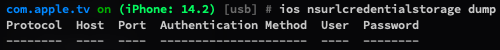

INSTALL FRIDA OBJECTION
To install Frida and its associated tools, you can follow these step-by-step instructions:
Install Python:
Frida requires Python to be installed on your system. You can download and install Python from the official Python website https://www.python.org Make sure to choose the appropriate version for your operating system.
Install Frida and Objection:
Step Setting For IOS:
Start Cydia and add Frida repository by going to Manage -> Sources -> Edit -> Add and enter https://build.frida.re. You should now be able to find and install the Frida package which lets Frida inject JavaScript into apps running on your iOS device. This happens over USB, so you will need to have your USB cable handy, though there no need to plug it in just yet.
List all running processes:
List all installed applications:
Use OBJECTION for IOS
You can use PID or Bundle ID to lauch app and attach it.
IOS info binary:
App bundle info:
Use ios bundles to list app frameworks and bundles.

List app directories:
List files in app directory:
You can use ls command to list files in app directory, and you can use cd command to check working directory
View file content:
You can use file cat command to view file content.
You can use for plist type file, can also use ios plist cat "plist file path" to decode plist file.
Download file from device:
You can use file download "file path" to download a file from device.
See the Cookies:
You can use ios cookies get to get cookies.
Dump all of the credentials:
You can use ios nsurlcredentialstorage dump to dump all of the credentials in the shared NSURLCredentialStorage.

List all loaded frameworks/modules:
You can use memory list modules to list all the loaded modules in the current process.
Dump app memory:
You can use memory dump all "output file path" to dump app memory to.
After dump memory, you can use strings to check readable strings in memory,
Dump/add/clear iOS keychain:
You can use memory dump all "output file path" to dump app memory to.
Using ios keychain.
Monitor Pasteboard:
You can use ios pasteboard monitor to monitor the iOS pasteboard.
Disable sslpinning:
Objection is our best recommendation and first approach to remove certificate pinning on iOS.